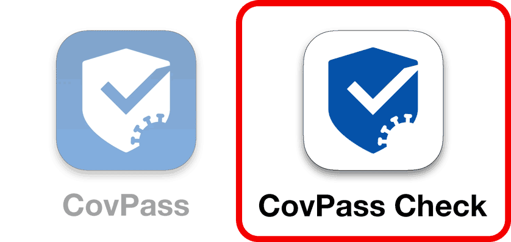

Hier kannst du deinen Namen anpassen (er wird nur lokal auf deinem Telefon gespeichert):
Peter Lustig
Zertifikat anzeigen: ❯
Was Sie tun müssen:

Mehr und mehr Restaurants, Bars, Friseure … in Deutschland müssen Impfzertifikate überprüfen, aber viele Betreiber*innen prüfen die Zertifikate nicht richtig. Das liegt sicherlich daran, dass viele sich mit der neuen Technologie nicht richtig auskennen und sie vielleicht auch nie richtig erklärt bekommen haben.
Um den Betreiber*innen das richtige Prüfen erklären zu können, gibt es diesen Artikel.
Und so funktioniert es:1. Öffnen diesen Artikel auf deinem Smartphone.
2. Füge diese Seite zu deinem Home-Bildschirm hinzu.
iPhone: Tippe unten zentral auf das quadratische Icon mit dem Pfeil, wähle den Punkt "Zum Home-Bildschirm" und auf "Hinzufügen".
Android: Tippe auf die drei Punkte rechts oben und wähle die Punkt "Zum Startbildschirm" hinzufügen.
3. Wenn du jetzt auf deinem Home-Bildschirm die neue App startest, öffnet sich eine Fake-CovPass-App mit deinem Namen und einem falschen QR-Code.
Wenn du das nächste mal in einem Geschäft bist, das die Impfzertifikate nicht richtig überprüft, kannst du einfach diese App zeigen. Wenn das Personal das akzeptiert, kannst du in der App nach unten scrollen, um zu zeigen, dass das Personal gerade auf eine Fälschung reingefallen ist. Dazu erscheint auch eine Anleitung, wie man Impfzertifikate richtig überprüft.